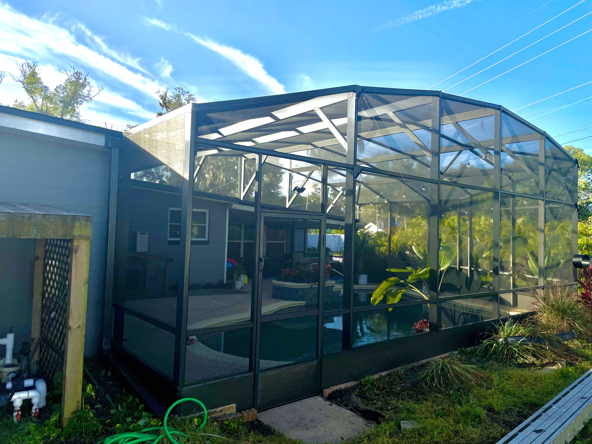

Pool Screen Enclosures
Custom-designed pool cages that protect from bugs and debris while keeping a clear, open view. Built for Florida weather with a luxury finish.
Learn More →Premium Screen Enclosures & Expert Repairs
High-end pool and patio screen enclosures, fast screen repair, and aluminum structure restoration in Orlando, Clermont, Winter Park, Windermere, Winter Garden, Sarasota, Cape Coral, and all Central Florida.
Licensed · Insured · Luxury Finish · Serving All Central Florida
From new pool and patio enclosures to detailed screen and aluminum repairs, Simple Screen Service delivers a clean, high-end finish across Central Florida.
Custom-designed pool cages that protect from bugs and debris while keeping a clear, open view. Built for Florida weather with a luxury finish.
Learn More →Elegant patio screen enclosures that turn your outdoor area into a comfortable, bug-free living space with clean, modern lines.
Learn More →Fast replacement for torn or sagging screens. We match existing frames, tighten everything, and leave your enclosure looking like new.
Learn More →Structural repairs, panel replacements, and storm damage fixes for aluminum frames, beams, and hardware — safe and built to last.
Learn More →Simple Screen Service provides professional screen enclosure repair, patio screen installation, and pool cage re-screening across Orlando and surrounding Central Florida communities.
 Before
Before

AfterA few examples of clean, luxury‑finish enclosures and repairs completed across Orlando, Clermont, Winter Park, Windermere, Winter Garden, Sarasota and Cape Coral.
Full re‑screen and frame refresh for a luxury pool cage, designed to keep clear views and strong storm performance.
New patio enclosure to extend outdoor living space, built with clean lines and a high‑end, resort‑style look.
Repaired damaged aluminum framing and replaced torn screens to restore safety and appearance after heavy storms.
Simple Screen Service follows a clear, professional process on every project so you know exactly what to expect from the first call to the final walkthrough.
Simple Screen Service is a detail‑driven screen enclosure and repair company serving homeowners across Central Florida. We combine clean, modern design with careful workmanship so your pool cage or patio enclosure looks and feels like part of a luxury home.
From full‑size pool cages and patio enclosures to precise re‑screening and aluminum structure repairs, every project is handled by experienced technicians, licensed and insured, who respect your time and your property. We show up when we say we will, communicate clearly, and leave your space spotless.
Call us at +1 (407) 405‑5790 or send a message using the form below.
Simple Screen Service provides premium screen patio enclosures, pool screen enclosures, screen repair, and aluminum structure repair across Central Florida.